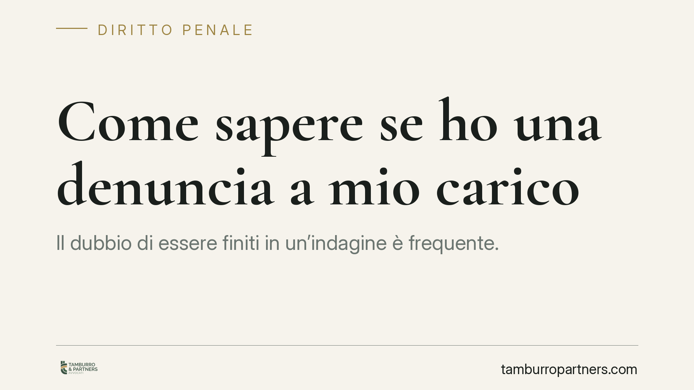

Come sapere se ho una denuncia a mio carico
Il dubbio di essere finiti in un'indagine è frequente. La legge consente di chiedere alla Procura se risulta un'iscrizione a proprio carico nel registro delle notizie di reato, tramite l'istanza ex art. 335 c.p.p. Lo strumento esiste, ma ha limiti precisi: il segreto istruttorio può rendere invisibile un procedimento in corso. Vediamo come funziona e cosa aspettarsi.

Denunciato non significa indagato
Prima di tutto una distinzione che orienta ogni verifica. Chi presenta una denuncia si limita a segnalare un fatto all'autorità: la denuncia non attiva automaticamente un procedimento penale a carico della persona indicata.
Si diventa indagati solo quando il Pubblico Ministero, valutata la notizia di reato, iscrive il nominativo nel registro previsto dall'art. 335 c.p.p. Sapere se esiste una denuncia, quindi, è cosa diversa dal sapere se esiste un'iscrizione. Ai fini pratici conta la seconda.
Il registro delle notizie di reato e i suoi modelli
La Procura annota le notizie di reato in registri distinti. Il modello 21 raccoglie i procedimenti contro persone note (gli indagati veri e propri). Il modello 44 riguarda i procedimenti contro ignoti, quando non è ancora individuato un responsabile. Il modello 45 è destinato agli atti che non costituiscono notizia di reato.
L'istanza ex art. 335 c.p.p. serve a verificare se il proprio nominativo compare tra le persone iscritte come indagate. È lo strumento con cui il cittadino può accedere, entro i limiti di legge, a questa informazione.
Inquadramento normativo
L'art. 335, comma 3, c.p.p. riconosce alla persona a cui il reato è attribuito, alla persona offesa e ai rispettivi difensori il diritto di ottenere comunicazione delle iscrizioni a proprio carico.
Lo stesso comma 3 prevede però un'eccezione: se si procede per uno dei delitti indicati nell'art. 407, comma 2, lett. a), c.p.p. — reati di particolare gravità e allarme sociale, come associazione mafiosa o terrorismo — il Pubblico Ministero può disporre, con decreto motivato, il segreto sulle iscrizioni per un periodo determinato. In questi casi la richiesta ottiene risposta negativa anche se l'iscrizione esiste.
A ciò si aggiunge il segreto istruttorio dell'art. 329 c.p.p.: gli atti di indagine sono coperti da segreto fino a quando l'imputato non ne possa avere conoscenza e, comunque, non oltre la chiusura delle indagini preliminari. Ecco perché una risposta negativa non equivale mai a una certezza di estraneità: il procedimento potrebbe esistere ma non essere ancora accessibile.
L'art. 335-bis c.p.p. e la reputazione
Un punto spesso frainteso riguarda il valore dell'iscrizione. L'art. 335-bis c.p.p., introdotto dal D.Lgs. 150/2022 (riforma Cartabia), stabilisce che «la mera iscrizione della notizia di reato nel registro di cui all'articolo 335 non può essere considerata indice di colpevolezza».
È una norma di garanzia. Essere iscritti nel registro non significa essere colpevoli, né lascia intendere alcuna anticipazione di responsabilità: l'iscrizione è un atto dovuto, che serve a scandire i termini delle indagini, non a esprimere un giudizio.
Implicazioni pratiche
Per chi teme di essere coinvolto in un'indagine, questo quadro comporta alcune conseguenze operative.
La verifica è possibile ma non risolutiva. Una risposta negativa della Procura non chiude ogni possibilità: il procedimento potrebbe essere secretato o non ancora formalizzato. Una risposta positiva, al contrario, non deve generare allarme sproporzionato, proprio alla luce dell'art. 335-bis.
È inoltre bene sapere che i termini di riscontro all'istanza non sono immediati: la Procura risponde secondo l'organizzazione dell'ufficio, e nella prassi possono trascorrere alcune settimane. Non esiste una risposta "a vista".
Cosa fare in concreto
- Individua la Procura competente, di norma quella del luogo in cui è stato presumibilmente commesso il fatto o in cui risiedi, e verifica le modalità di deposito dell'istanza.
- Presenta l'istanza ex art. 335 c.p.p. indicando i tuoi dati e, se possibile, un riferimento al fatto: la richiesta va formulata per iscritto e può essere depositata personalmente o tramite difensore.
- Metti in conto i tempi di risposta e non interpretare il silenzio o un riscontro negativo come prova di assenza di procedimento.
- Ripeti la verifica a distanza di tempo se il sospetto persiste: un'iscrizione può intervenire in un momento successivo.
- Rivolgiti a un difensore prima di rendere dichiarazioni o assumere iniziative, soprattutto se ricevi atti come un invito a comparire o un'informazione di garanzia.
Agire con metodo, senza allarmismi, resta la scelta più prudente.
Contributo informativo a cura di Tamburro & Partners - Avv. Giuseppe Tamburro. Non costituisce parere legale.
Ogni condominio ha una storia a sé.
Se gestisci un'amministrazione e vuoi un confronto su una specifica questione condominiale, scrivi allo studio. Ti rispondiamo entro un giorno lavorativo.